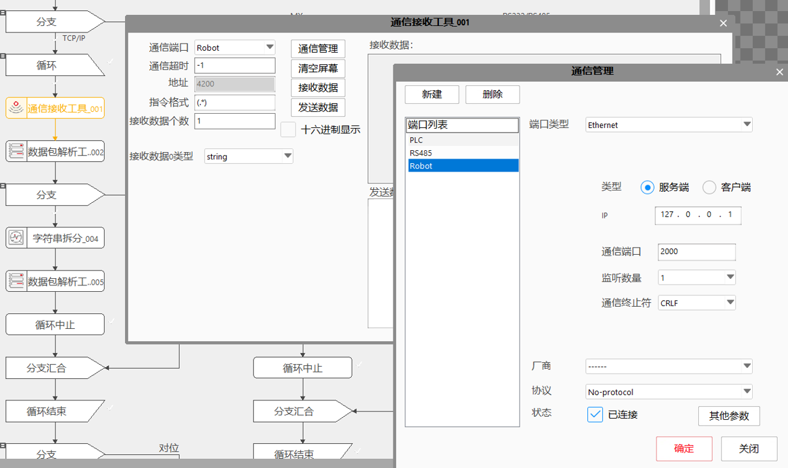
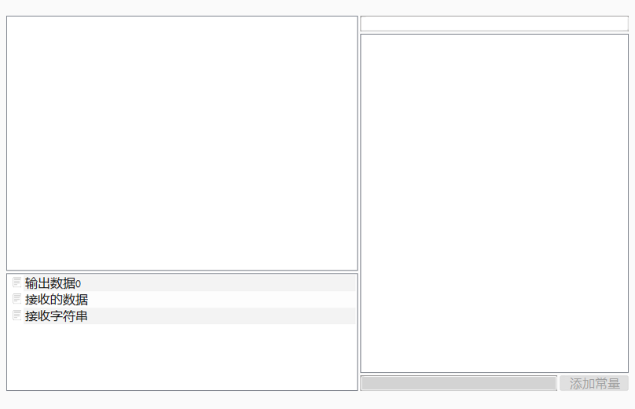

信接收工具主要是接收目标设备端口发送的特定格式的数据指令，完成与外部设备的信息交互。通常在使用之前需要在通信管理对话框（工具条-设置-通信）中完成对通信端口的设置。特别的，通信接收的数据有两种方式进行解析。一种是根据通信协议书写正则表达式，然后配合数据包解析工具来分析接收的数据。另一种方式是不书写正则表达式，此时可以配合字符串拆分工具对通信数据进行分析，但是此种方式对数据格式有一定的要求，不一定能够满足所有需求。
网络、串口、寄存器等接收并解析发来数据供后续工具使用；
使用网络、串口、寄存器等和其他设备端建立连接，按照约定好的规则接收其他设备端发来信息并解析出对应的数据（如bool、char、string、double、float 、int、long、short、unsigned char、unsigned long、unsigned short类型）。

右键点击通信接收工具->属性->通信管理，打开通信管理界面后新建端口，上图例子是使用网络无协议客户端，连接后点击“确定”按键，端口信息会同步到通信接收工具的高级界面；在高级界面中按照和连接的设备端的约定设置参数，然后可以对建立的通信进行测试，测试没问题后点击右上角叉号关闭通信接收工具窗口，在通信接收工具高级界面中设置的参数会同步到通信接收参数的属性中，此时该工具可以正常使用；

其他工具需要把数据链连接到该通信接收工具，方式有两种：
1.直接连接输出数据；
2.安装之前先连接数据包解析工具在使用解析出来参数的方式；
| 现象描述 | 解决方法 |
|---|---|
| 不能打开端口 | 1、检查端口是否被占用；2、检查端口是否已经被打开；3、检查参数设置； |
| 通信连接失败 | 1、使用通信工具测试通信能否正常连接；2、检查连接线路；3、检查端口是否能打开； |
| 参数名称 | 参数说明 |
|---|---|
| 通信端口 | 选择所需要通信的设备（由通信管理对话框完成端口配置）。 |
| 通信超时 | 设备通信超时等待时间（单位ms，设置为-1表示一直等待）。 |
| 指令格式 | 该格式输入为正则表达式形式。当该格式指令为空时，可以配合字符串拆分工具直接分析接收数据 |
| 接收数据个数 | 接收的数据个数（根据通信协议设置）。 |
| 接收数据类型 | 接收的数据的类型（根据通信协议分别设置）。 |
| 参数名称 | 参数说明 |
|---|---|
| 输出数据0… | 接收到数据解析后的数据 |
| 接收的数据 | 通信数据经过正则表达式解析后的数据。 |
| 接收字符串 | 通信工具接收到的完整的字符串（未拆分）。 |
| 执行结果 | 工具执行结果。 |
| 执行时间 | 工具执行时间。 |
一个正则表达式仅仅为一个字符串，它没有长度限制。“子表达式”指的是整个正则表达式中的一部分，通常是括号内的表达式，或者是由"|“分割的多选分支。（默认情况下，表达式中的字母是要区分大小写的）。
一个正则表达式通常以插入符号"^“开始，以插入符号”$“结束。表达式中有三种括号类型：方括号”[ ]“内是需要匹配的字符；花括号”{}“是指指定匹配字符的数量；圆括号”()“则是用来分组的。
示例：
^[0-9]{8}$
^[a-z]{3}[0-9]{8}$ 表示前三个是字母，后面为8位长度数字，若字母部分有大小写，则表达式可表示为：^[a-zA-Z]{3}[0-9]{8}$
验证邮箱格式
email开始是长度在1-10的英文字母，最后跟一个"@“：^[a-zA-Z0-9]{1, 10}@；@后面是长度在1-10的英文字母，后面跟一个”.“：[a-zA-Z]{1, 10}； 最后以.com或.org结束：.(com|org)$。则完整的表达式可写为：^[a-zA-Z0-9]{1, 10}@[a-zA-Z]{1, 10}.$
常用的元字符：
“."：匹配除”\n"之外的任何单个字符，若要匹配包括"\n"在内的任意字符，需使用诸如"[\s\S]“之类的模式；
“^"：匹配输入字符串的开始位置，不匹配任何字符，要匹配”^“字符本身，需使用”^“；
“$"：匹配输入字符串结尾的位置，不匹配任何字符，要匹配”$“字符本身，需使用”\$“；
“"：零次或多次匹配前面的字符或子表达式，”“等效于”{0, }“，如”^*b"可以匹配"b"、"b"、"^b"、…；
“+"：一次或多次匹配前面的字符或子表达式，等效于”{1, }“，如"a+b"可以匹配"ab"、"aab"、"aaab"、…；
“?"： 零次或一次匹配前面的字符或子表达式，等效于”{0, 1}“，如"a[cd]?"可以匹配"a"、"ac"、"ad"； 当此字符紧随任何其他限定符”*“、”+“、”?“、”{n}“、”{n, }“、”{n, m}“之后时，匹配模式是“非贪心的”。“非贪心的”模式匹配搜索到的、尽可能短的字符串，而默认的“贪心的”模式匹配搜索到的、尽可能长的字符串。如，在字符串"oooo"中，"o+?"只匹配单个"o"，而"o+"匹配所有"o"；
“|"： 将两个匹配条件进行逻辑"或”(or)运算，如正则表达式"(him|her)“匹配"it belongs to him"和"it belongs to her"，但是不能匹配"it belongs to them"；
“\"：将下一字符标记为特殊字符、文本、反向引用或八进制转义符，如，"n"匹配字符"n"，”\n"匹配换行符，序列"\“匹配”\“，”(“匹配”(“；
“\w"：匹配字母或数字或下划线，任意一个字母或数字或下划线，即A~Z，a~z，0~9，_中任意一个；
“\W"：匹配任意不是字母、数字、下划线的字符；
“\s"：匹配任意的空白符，包括空格、制表符、换页符等空白字符的其中任意一个，与”[ \f\n\r\t\v]“等效；
“\S"：匹配任意不是空白符的字符，与”[^\f\n\r\t\v]“等效；
“\d"：匹配数字，任意一个数字，0~9中的任意一个，等效于”[0-9]“；
“\D"：匹配任意非数字的字符，等效于”[^0-9]“；
“\b"：匹配一个字边界，即字与空格间的位置，也就是单词和空格之间的位置，不匹配任何字符，如，"er\b"匹配"never"中的"er"，但不匹配"verb"中的"er"；
“\B"：非字边界匹配，"er\B"匹配"verb"中的"er"，但不匹配"never"中的"er"；
“\f"：匹配一个换页符，等价于”\x0c"和"\cL"；
“\n"：匹配一个换行符，等价于”\x0a"和"\cJ"；
“\r"：匹配一个回车符，等价于”\x0d"和"\cM"；
“\t"：匹配一个制表符，等价于”\x09"和"\cI"；
“\v"：匹配一个垂直制表符，等价于”\x0b"和"\cK"；
“\cx"：匹配"x"指示的控制字符，如，”\cM"匹配Control-M或回车符，"x"的值必须在"A-Z"或"a-z"之间，如果不是这样，则假定c就是"c"字符本身；
“{n}"："n"是非负整数，正好匹配n次，如，"o{2}"与"Bob"中的"o"不匹配，但与"food"中的两个"o"匹配；
“{n, }"："n"是非负整数，至少匹配n次，如，"o{2, }"不匹配"Bob"中的"o"，而匹配"foooood"中的所有"o"，"o{1, }"等效于"o+"，"o{0, }"等效于"o*"；
“{n, m}"："n"和"m"是非负整数，其中n<=m，匹配至少n次，至多m次，如，"o{1, 3}"匹配"fooooood"中的头三个o，'o{0, 1}‘等效于'o?'，注意，不能将空格插入逗号和数字之间；如"ba{1, 3}"可以匹配"ba"或"baa"或"baaa"；
“x|y"：匹配"x"或"y"，如，"z|food"匹配"z"或"food"；”(z|f)ood"匹配"zood"或"food"；
“[xyz]"：字符集，匹配包含的任一字符，如，”[abc]“匹配"plain"中的"a"；
“[^xyz]"：反向字符集，匹配未包含的任何字符，匹配除了"xyz"以外的任意字符，如，”[^abc]“匹配"plain"中的"p"；
“[a-z]"：字符范围，匹配指定范围内的任何字符，如，”[a-z]“匹配"a"到"z"范围内的任何小写字母；
“[^a-z]"：反向范围字符，匹配不在指定的范围内的任何字符，如，”[^a-z]“匹配任何不在"a"到"z"范围内的任何字符；
“( )"：将”(“和”)“之间的表达式定义为“组group”，并且将匹配这个表达式的字符保存到一个临时区域，一个正则表达式中最多可以保存9个，它们可以用”\1"到"\9"的符号来引用；
参见"\Samples\通信发送&接收工具.gvp"。
通信接收工具使用通信发送工具建立通信或者使用通信助手建立通信来使用。